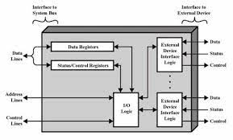

Módulos de Entrada/Salida E/S
El intercambio de información entre componentes, computadoras y usuarios es realizado mediante dispositivos que denominamos de manera genérica periféricos.
Para hacer una operación entre el procesador y un periférico, es necesario conectar esos dispositivos a la computadora y gestionar de manera efectiva la transferencia de datos.
Estos módulos son las interfaces que tiene la computadora con el exterior y el objetivo que tiene es facilitar las operaciones de E/S entre los periféricos y la memoria o los registros del procesador.
Los módulos entrada/salida están conectados con el procesador y la memoria principal, y cada uno controla uno o más dispositivos externos.
La arquitectura de entrada/salida es su interfaz con el exterior, esta arquitectura se diseña de manera que permita una forma sistemática de controlar las interacciones con el mundo exterior y proporcione el sistema operativo la información que necesita para gestionar la actividad de entrada/salida.
Para gestionar las operaciones de entrada/salida es necesario un hardware y la ayuda de un software.
Técnicas de entrada/salida principales:
Entrada/salida programada.
Para hacer la operación de entrada/salida entre el procesador y el módulo, el procesador ejecuta un programa que controla toda la operación de entrada/salida (programación, transferencia de datos y finalización).
A continuación, analizamos con más detalle en las transferencias de un dato:
Sincronización.
Durante la sincronización, el procesador, como responsable de la transferencia, ejecuta un programa que mira constantemente el estado del periférico consultando el registro de estado del módulo de entrada/salida.
Este programa tiene un bucle que se ejecuta continuamente hasta que detecta el cambio de estado e indica que el periférico está preparado
Mientras se lleva a cabo la sincronización, el procesador está dedicado al 100% a esta tarea y, por lo tanto, no puede atender a otros procesos o aplicaciones. Si esta espera es muy larga, puede degradar el nivel de prestaciones de todo el sistema. Por lo tanto, es recomendable que las transferencias hechas utilizando esta técnica sean cortas y rápidas.
Intercambio de dato.
Durante el intercambio de datos, si es una operación de lectura (entrada), el procesador lee el registro de datos del módulo de entrada/salida para recoger el dato enviado por el periférico, y lo guardas memoria; si es una operación de escritura (salida), el procesador toma de la memoria el dato que queremos enviar al periférico y lo escribe en el registro de datos del módulo de entrada/salida.
Se produce bajo el control directo y continuo del programa que solicita la operación de entrada/salida, así como la entrada y salida programada con interrupciones, el procesador es responsable de extraer los datos de la memoria en una salida, y almacenar los datos en la memoria principal. El procesador tiene que estar un tiempo considerable hasta que el módulo en cuestión esté preparado para recibir o transmitir datos.
Entrada/Salida mediante Interrupciones.
El programa genera una orden de entrada/salida y después continúa ejecutándose hasta que el hardware lo interrumpe para indicar que la operación ha concluido.
La entrada y salida con interrupciones, aunque es más eficiente que la programada, también requiere la intervención activa del procesador para transferir los datos entre la memoria y el módulo de entrada/salida.
Esta técnica de entrada/salida pretende evitar que el procesador tenga que estar parado o haciendo trabajo improductivo mientras esperaba que el periférico esté preparado para hacer una nueva operación de entrada/salida y pueda aprovechar este tiempo para ejecutar otros programas.
Utilizando la técnica de entrada/salida por interrupciones se descarga el módulo de entrada/salida de la responsabilidad de llevar a cabo la sincronización entre el periférico y el procesador.
Para utilizar esta técnica de entrada/salida en una computadora es necesario considerar tanto aspectos del software como del hardware.
Como parte del hardware, es necesario que la computadora disponga de una línea especial que tiene que formar parte del conjunto de líneas de control de voz del sistema y que denominamos línea de petición de interrupción (INT).
El módulo de entrada/salida avisa el procesador mediante esta línea indica que está preparado para hacer la transferencia. La señal INT la activa el módulo de entrada/salida y la recibe el procesador.
Es una señal activa a la baja. El procesador debe tener un punto de conexión de entrada por donde llegarán las interrupciones y el módulo de entrada/salida debe tener un punto de conexión de salida por dónde generará las interrupciones.
E/S Acceso directo a memoria (DMA).
Un procesador específico toma el control de la operación para transferir un bloque de datos.
El módulo DMA es capaz de imitar al procesador y, capaz de transferir datos desde memoria a través del bus del sistema.
El módulo de medida debe utilizar el bus sólo cuando el procesador no lo necesita, o debe forzar al procesador hay que suspenda temporalmente su funcionamiento.
Un módulo de entrada/salida no es únicamente un conector mecánico que permite conectar el dispositivo al bus del sistema, contiene la lógica necesaria para permitir la comunicación entre los periféricos y el bus.
Esta técnica más eficiente para transferir bloques de datos, el DMA.
El procesador como programa la transferencia de un bloque de datos entre el periférico y la memoria en cargando a un nuevo elemento conectado al bus del sistema hacer toda la transferencia
Una vez acabada este nuevo elemento avisa al procesador, de esta manera, el procesador puede dedicar todo el tiempo que dura la transferencia del bloque a otras tareas.
Este nuevo elemento que gestiona toda la transferencia de datos entre el periférico y la memoria principal lo denominamos módulo o controlador de DNA o también en versiones más evolucionadas canal o procesador de entrada/salida.
Utilizando la técnica de entrada/salida por DMA se descarga al procesador de la responsabilidad de llevar a cabo la sincronización y el intercambio de datos entre el periférico y la memoria.
Canales y Procesadores de Entrada/Salida
El canal de entrada y salida representa una ampliación del concepto de Mia. Un canal de entrada y salida puede ejecutar instrucciones de entrada y salida, lo que le confiere un control completo sobre las operaciones de entrada y salida.
Un canal selector controla varios dispositivos de velocidad elevada y en un instante dado, se dedica a transferir datos a uno de esos dispositivos, es decir el canal de entrada y salida seleccionar un dispositivo y efectuar la transferencia de datos. Por cada dispositivo o pequeño grupo dispositivos es manejado por el módulo de entrada/salida o controlador, así el canal de entrada y salida se utiliza en lugar del CPU para controlar estos controladores.
Un canal multiplexor puede manejar la entrada y salida de varios dispositivos al mismo tiempo. Para dispositivos de velocidad reducida, un multiplex sor de byte acepta o transmite caracteres tan rápido como es posible a varios dispositivos.